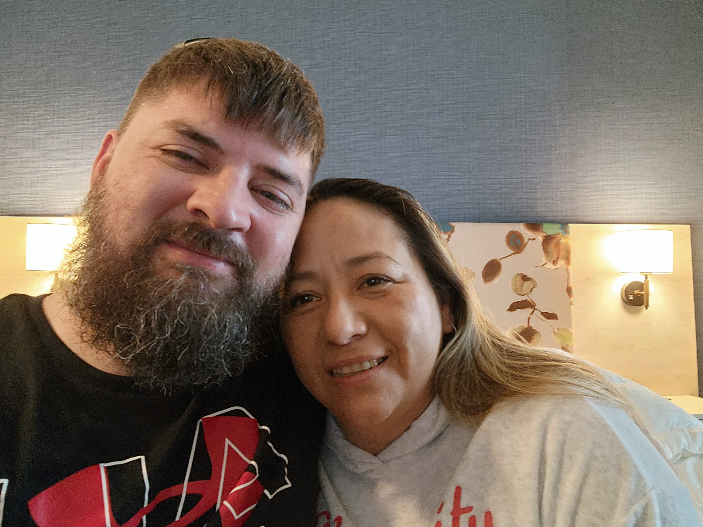

Silvia grow up in a small town in Coatepeque in Guatemala. Her mother was a stay-at-home
mom, and her dad was a cop in Guatemala but had moved to the United States when she was young.
Silvia has 4 siblings. Leaving them in Guatemala. After a few years her mom had left to come to the
states for a better job. When Silvia was around 13 years old her mom had brought Silvia and her younger
brother and sister to live with her in Arkansas.
Bio
Silvia currently works for a bank as a bilingual supervisor and has been in her current position for
3 years now. She explains to me that she loves helping others out and learning more about their jobs
within the bank and is very excited to help them grow in their career. She has always dreamed about
being a nurse, but she came across this job and now wants to give her knowledge of what she learn to
her peers.
When I asked her what she like the most when she is off work, she told me her favorite thing to do is
spend time with our kids and go to the lake and swim and hang out with family as most as she can. She
also likes to get out and go fishing on her boat with her husband and spend hours not catching anything
but if she can spend time with everyone. She also like to get up and paint or rebuild cabinets in her
home and make them look new. She enjoys making the yard look good with planting flowers and trees
around her house.